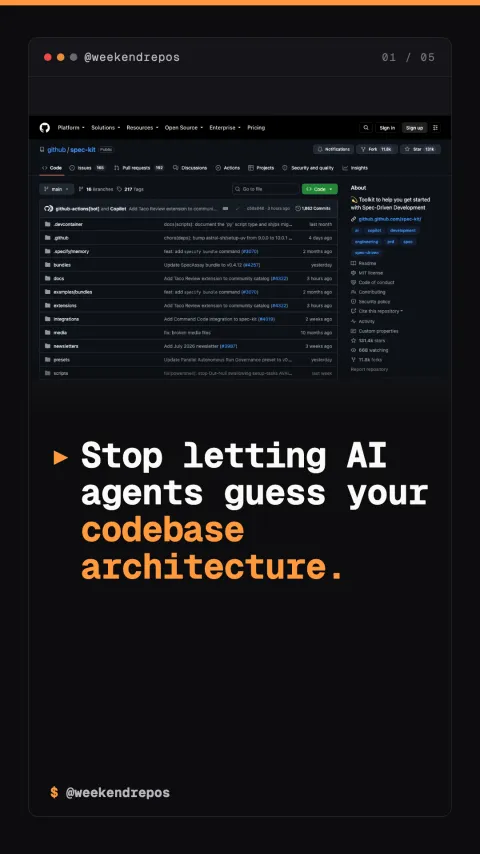

spec-kit
Turn markdown specs into verified code with AI agents

Stop letting AI agents guess your codebase architecture.
Initialize spec-driven workflows with a single command.
First, bootstrap any new or existing repository in seconds using uvx. Spec Kit generates structured specification templates that coding agents can immediately parse.
uvx · instant repository initialization
Replace ad-hoc prompt guessing with strict technical contracts.
Second, instead of chaotic vibe coding, agents follow a four-stage lifecycle: specifying intent, planning architecture, tasking steps, and generating verified code.
structured SDD workflow · 4-stage lifecycle
Agent agnostic design powers all major coding assistants.
Third, the toolkit is completely agent-agnostic, integrating seamlessly with GitHub Copilot, Claude Code, Gemini CLI, and custom agent swarms.
Copilot · Claude Code · Gemini CLI support
Open source on GitHub: 131,000 stars and MIT licensed.
It is fully open source under the MIT license with over one hundred thirty-one thousand stars on GitHub.
github.com/github/spec-kit · MIT License